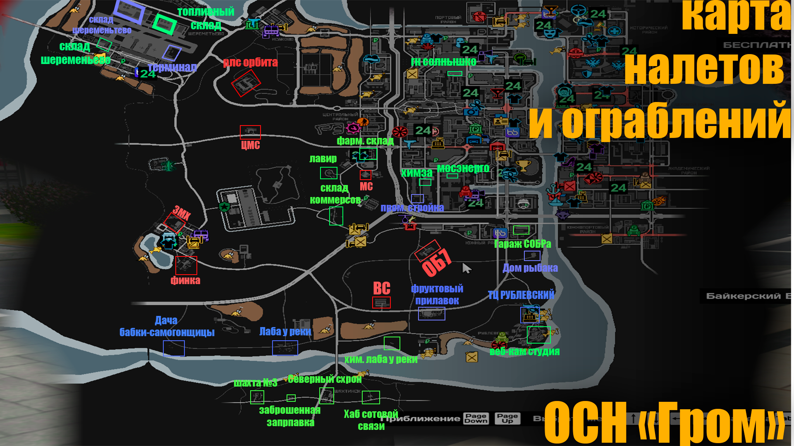
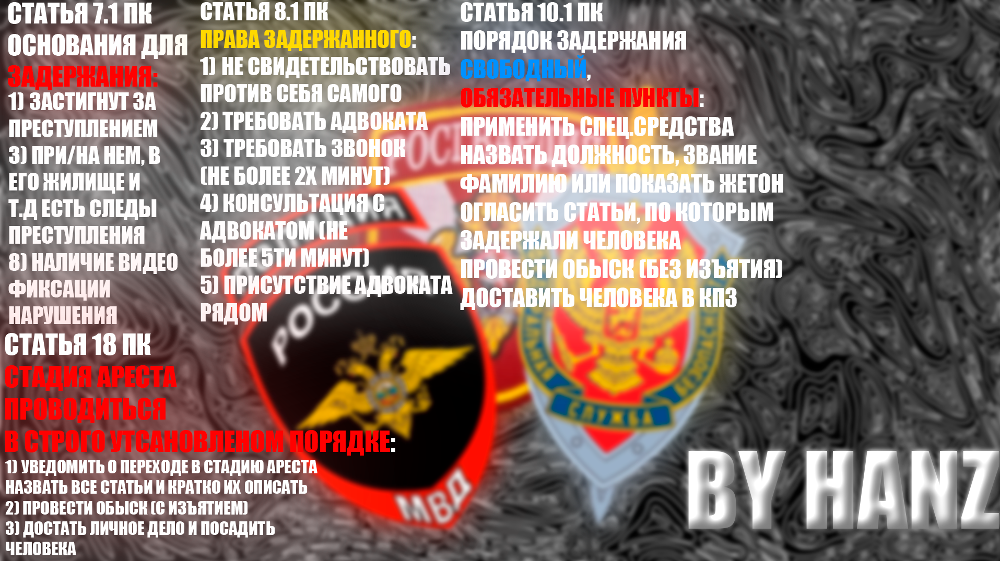

Памятки
Карта налётов и порядок задержания
Материалы для стажёров и оперативного состава. Карту желательно знать не «примерно где-то там», а нормально: она может быть в экзамене на повышение.
Изображения
Основные памятки


Законка
Быстрый поиск статей
Короткая памятка по частым статьям для ОСН. Перед наказанием или процессуальным действием сверяй актуальную редакцию в официальной теме форума.
Показаны все статьи.
КоАП: частые нарушения
ПК
Процессуалка при задержании
Основания
Лицо застигнуто при правонарушении, указано очевидцами, отказалось идентифицироваться, находится в розыске, скрывалось или есть признаки причастности.
Права
Не свидетельствовать против себя, требовать адвоката, присутствие адвоката на процессуальных действиях, консультация 5 минут, звонок 2 минуты.
Порядок
Надеть наручники, идентифицировать лицо, инкриминировать статьи, провести первичный обыск, посадить в авто и доставить в КПЗ.
Личный обыск
Проводится со справкой причины. Проверяются оружие, реагенты, наркотики, материалы, бронежилет и незаконное имущество.
Доклады
Формы на задачах
Патруль и усиленный патруль
- Докладывает: Сержант Иванов, начал патрулирование по городу. Состав: 1. Код-1.
- Докладывает: Сержант Иванов, продолжаю патрулирование по городу. Состав: 1. Код-1. Каждые 15 минут.
- Докладывает: Сержант Иванов, закончил патрулирование по городу. Состав: 1. Код-1.
- Докладывает: Сержант Иванов, начал усиленный патруль по военным объектам. Состав: 2. Код-1.
- Докладывает: Сержант Иванов, продолжаю усиленный патруль по военным объектам. Состав: 2. Код-1. Каждые 15 минут.
- Докладывает: Сержант Иванов, закончил усиленный патруль по военным объектам. Состав: 2. Код-1.
Дежурное подразделение
- Докладывает: Сержант Иванов, заступил в наряд ДП. Состав: 1. Код-1.
- Докладывает: Сержант Иванов, продолжаю службу в наряде ДП. Состав: 1. Код-1.
- Докладывает: Сержант Пупкин, выехали на [куда выехали] в составе ДП.
- Товарищ подполковник, за время несения службы произошло [перечислить] / происшествий не случилось. Доложил старший ДП сержант Иванов.
- Докладывает: Сержант Иванов, сдал наряд ДП. Состав: 1. Код-1.
Жетон:
/do На бронежилете висит нагрудный знак: «УВД по ЦАО | ОСН "ГРОМ" | Позывной».Дополнительно